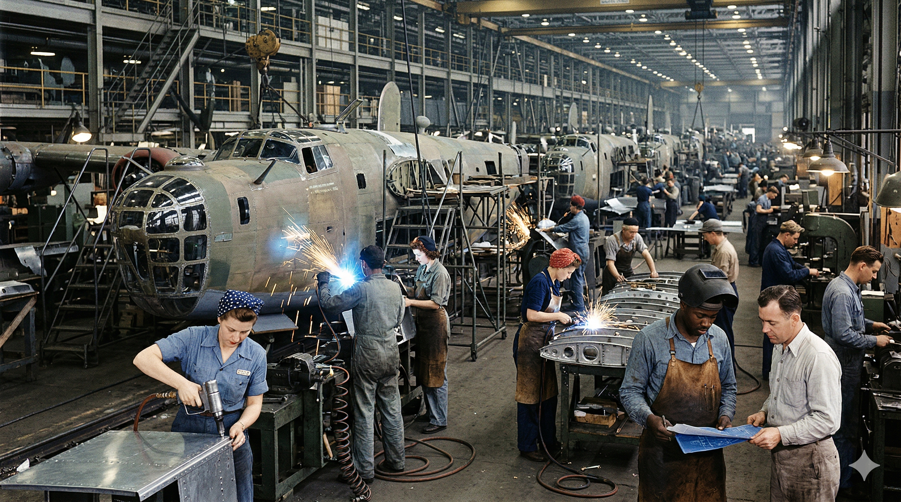
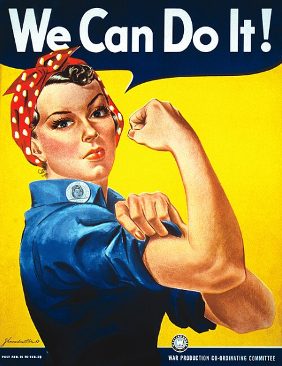
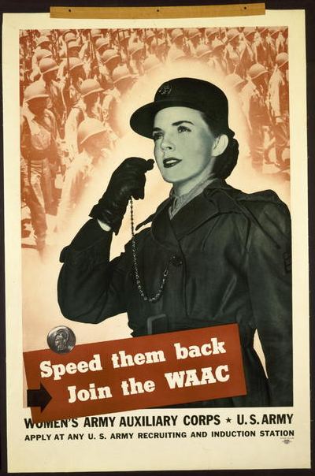
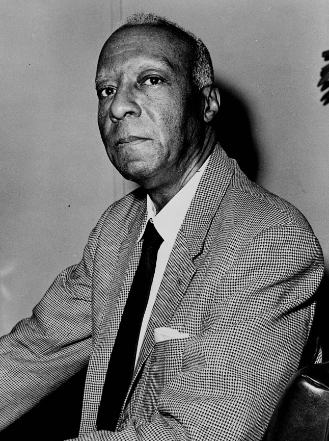
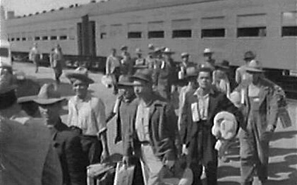
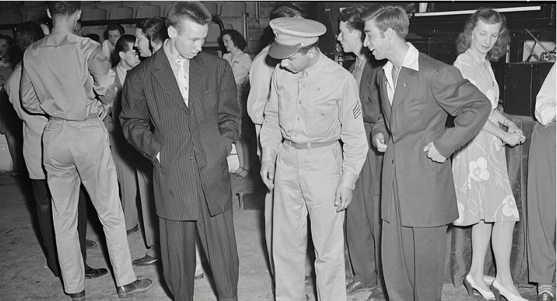
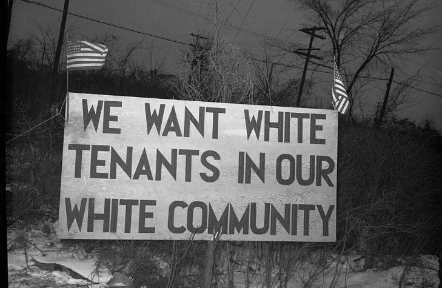
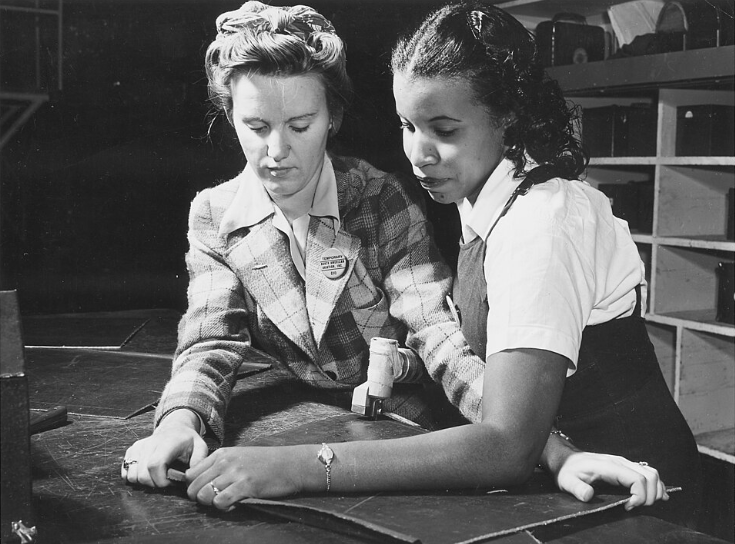
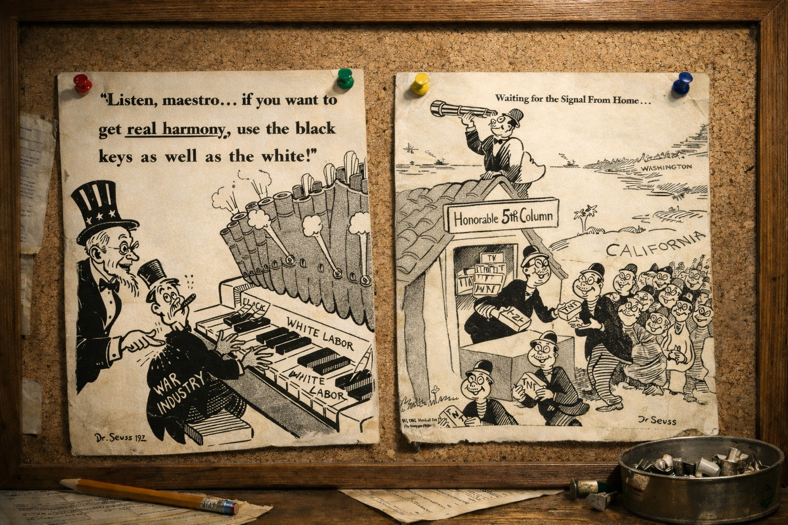

Core Objectives
- Analyze the impact of "Rosie the Riveter" propaganda on women's workforce participation and the subsequent post-war pressure to return to domesticity.
- Evaluate the goals and achievements of the "Double V" campaign and A. Philip Randolph's role in securing Executive Order 8802.
- Contrast the experiences of Mexican Americans under the Bracero Program with the racial violence of the Zoot Suit Riots in Los Angeles.
Key Terms
Rosie the Riveter | Double V Campaign | A. Philip Randolph | Executive Order 8802 | CORE (Congress of Racial Equality) | Bracero Program | Zoot Suit Riots | Tuskegee Airmen | WAACs (Women’s Army Auxiliary Corps) | FEPC (Fair Employment Practices Committee) | Great Migration (Second) | Detroit Race Riot (1943)
Introduction: The Crucible of the Home Front
The onset of World War II created an unprecedented labor vacuum in the United States, forcing the nation to rapidly reconsider traditional gender and racial boundaries to keep the "Arsenal of Democracy" running. As millions of women and minorities stepped into high-paying industrial jobs and military roles, they fundamentally challenged the prevailing social norms of the early 20th century. However, this newfound economic mobility and social participation were frequently met with intense resistance, wage disparities, and violent racial backlash. Ultimately, the wartime home front became a deeply contested battlefield, setting the stage for the major cultural and civil rights conflicts that would define the post-war era.

The massive labor requirements of the "Arsenal of Democracy" shattered long-standing employment barriers, pulling millions of women and minorities into the defense sector and setting the stage for subsequent civil rights battles.
Analysis Question: How did the physical environment of the wartime factory floor reflect broader societal changes occurring during the 1940s?
Women in the Wartime Workforce and Military
Faced with a systemic crisis in industrial production, the federal government launched a massive propaganda campaign to normalize women performing heavy manufacturing work, effectively pulling millions into the defense sector. While women proved essential to the war effort as welders, shipfitters, and vital military auxiliary personnel, their advancement was meticulously framed as a temporary wartime necessity. Despite taking on double burdens and enduring skepticism, their unprecedented wartime autonomy planted the seeds for post-war cultural friction when they were expected to return to domesticity.
Women and the Defense of the Nation
The onset of World War II created a labor vacuum in the United States that was unlike any the nation had ever experienced in its industrial history. As millions of young men donned uniforms and shipped out to the European and Pacific theaters of combat, the massive industrial machinery of the "Arsenal of Democracy" faced a desperate, mounting shortage of workers. This was not a localized problem; it was a systemic crisis that threatened to stall the very assembly lines required to keep Allied armies in the field. To solve this existential threat to production, the federal government and private industry were forced to turn to a demographic that had previously been largely excluded from heavy industrial labor: American women. This shift was not merely a pragmatic change in the workforce; it represented a fundamental and often jarring challenge to the prevailing gender norms of the early 20th century, which dictated that a woman’s primary and natural sphere was strictly within the domestic home.
To encourage women to leave their kitchens and nurseries and enter the grueling environment of the defense plants, the government launched a sophisticated and massive propaganda campaign. The most iconic and enduring symbol of this effort was Rosie the Riveter, a fictional character depicted in posters, magazines, and songs as a strong, capable, and patriotic woman dressed in work overalls and a bandana. Rosie was shown with flexed muscles and a determined expression, often accompanied by the slogan "We Can Do It!" This campaign was designed to normalize the idea of women performing "men's work" by framing it as a vital extension of their maternal and patriotic duties. The campaign worked with staggering effectiveness, appealing to both the deep-seated patriotism of American women and their pressing economic needs following the lean years of the Great Depression. Between 1941 and 1945, the number of women in the workforce surged by more than six million, bringing the total number of working women to nearly 19 million.

The "We Can Do It!" poster produced by Westinghouse Electric in 1943 to boost female worker morale in defense plants.
Why it Matters: The massive propaganda push to recruit female industrial laborers fundamentally challenged early 20th-century gender norms. It demonstrated how federal necessity during wartime could temporarily override deep-seated societal expectations regarding women's primary sphere in the domestic home.
Spotlight Question: What does the government's creation of propaganda campaigns targeting female workers reveal about the systemic labor crises facing the "Arsenal of Democracy"?
For many of these women, the war provided their first real opportunity to work in high-paying industrial positions that had previously been the exclusive domain of men. They became welders, machinists, crane operators, and shipfitters. In the massive aircraft plants of California and the shipyards of the Gulf Coast, women proved that they possessed the manual dexterity and physical stamina required for complex heavy manufacturing. However, this entry into the industrial world was fraught with complications. While women were essential to production, they often faced a "double burden," as they were still expected to manage all household chores, cooking, and childcare after completing ten-hour shifts at the factory. Furthermore, despite doing the same work as their male counterparts, women were frequently paid significantly lower wages, reflecting the persistent belief that a woman’s income was "secondary" to that of a male breadwinner.
Checkpoint
1. What was the primary goal of the "Rosie the Riveter" propaganda campaign?
2. Which challenge did women face in the defense industry despite their essential roles?
Women in Uniform
The military also opened its doors to women in unprecedented ways, leading to the creation of several female auxiliary units. The most prominent of these was the WAACs (Women’s Army Auxiliary Corps), which was later granted full military status as the Women's Army Corps (WAC). Under the leadership of Director Oveta Culp Hobby, women in the WAACs served in a wide array of non-combat roles, including nurses, radio operators, mechanics, and clerical staff. By taking over these essential behind-the-lines duties, women freed up hundreds of thousands of men for direct combat service. Similar programs were established in other branches, such as the Navy’s WAVES and the Coast Guard’s SPARS. Despite the professional and vital nature of their service, these women often faced intense skepticism, ridicule, and even harassment from male soldiers and officers who viewed the military as a sacred masculine space. The performance of these women, however, was exemplary, and their service paved the way for the eventual integration of women into the regular armed forces in the decades to come.

A World War II recruiting poster encouraging women to enlist in the Women's Army Auxiliary Corps (WAAC).
Why it Matters: The integration of women into non-combat military roles freed hundreds of thousands of men for direct combat service. This unprecedented military participation paved the way for the eventual permanent integration of women into the regular armed forces, despite the contemporary expectation that such service was strictly a temporary wartime measure.
Spotlight Question: How did the establishment of female auxiliary units like the WAACs affect the deployment and distribution of male soldiers during the war?
However, the social progress represented by Rosie and the WAACs was meticulously framed by the government as a temporary measure. Propaganda during the war was careful to emphasize that women were working "for the duration" of the conflict. The underlying message was clear: once the "boys" came home, women were expected to relinquish their tools and uniforms and return to their traditional domestic roles. This created a profound and lasting tension in American culture. While many women enjoyed the economic independence, technical skills, and sense of public purpose that came with wartime work, they were constantly reminded that their status as industrial workers or soldiers was fragile and conditional. This wartime experience effectively set the stage for a major cultural conflict in the post-war era, as many women found themselves reluctant to return to a life of domesticity after having tasted the autonomy of the "Arsenal of Democracy."
Checkpoint
1. What was the main purpose of female auxiliary units like the WAACs?
2. How did the U.S. government frame women's participation in the military and industry?
African Americans and the Struggle for the Double V
For African Americans, fighting fascism abroad highlighted the painful paradox of enduring systemic, state-sanctioned segregation at home. Utilizing the urgency of the global crisis, Black leaders and labor organizers strategically demanded immediate economic and civil rights, forcing the federal government to issue landmark executive protections against employment discrimination. This era of federal intervention and massive industrial opportunity accelerated demographic shifts and laid the crucial organizational groundwork—both in civilian activism and through the valor of segregated military units—for the future Civil Rights Movement.
African Americans and the "Double V" Campaign
For African Americans, World War II presented a profound and painful paradox that could not be ignored. While the United States was officially engaged in a global crusade to defeat the forces of fascism and racial supremacy in Europe and Asia, the nation continued to practice systemic, state-sanctioned segregation and brutal discrimination within its own borders. This glaring hypocrisy was at the center of the Black wartime experience. In response, African American leaders and the Black press launched the Double V Campaign. The "Double V" stood for "Victory over our enemies at home and victory over our enemies on the battlefields abroad." This movement was a sophisticated political strategy that sought to use the urgency of the war effort and the nation’s rhetoric of freedom as leverage to demand immediate civil rights, economic equality, and an end to Jim Crow segregation.
The struggle for economic justice on the home front was spearheaded by the veteran labor leader A. Philip Randolph, the influential president of the Brotherhood of Sleeping Car Porters. Randolph recognized that while the defense industry was experiencing an unprecedented boom, Black workers were being systematically excluded from the high-paying jobs in the new aircraft plants and shipyards. Even when they were hired, they were often relegated to the most menial, dangerous, and lowest-paying tasks. In 1941, Randolph took a bold and confrontational stand by threatening to lead a massive march of 100,000 African Americans on Washington, D.C. His demands were clear: an end to discrimination in defense hiring and the desegregation of the armed forces.

Labor leader A. Philip Randolph, president of the Brotherhood of Sleeping Car Porters, who threatened a massive march on Washington in 1941.
Why it Matters: The "Double V" strategy brilliantly leveraged the nation's wartime democratic rhetoric to demand immediate action against domestic segregation and economic exclusion. This movement established a sophisticated framework for civil rights activism that directly challenged the paradox of fighting racial supremacy abroad while enforcing it at home.
Spotlight Question: How did the rhetoric of fighting global fascism abroad shape the political strategies of African American civil rights leaders at home?
Checkpoint
1. What did the "Double V" campaign represent for African Americans?
2. How did A. Philip Randolph pressure the Roosevelt administration to address discrimination?
Federal Action, Migration, and Military Service
The prospect of a massive racial protest in the nation's capital during a global crisis was a nightmare for the Roosevelt administration. Roosevelt feared that such a demonstration would not only embarrass the United States on the world stage—providing ammunition for Axis propaganda—but would also lead to racial violence and disrupt vital war production. After intense negotiations, Randolph agreed to cancel the march in exchange for a major federal intervention. On June 25, 1941, Roosevelt issued Executive Order 8802, which prohibited "discrimination in the employment of workers in defense industries or government because of race, creed, color, or national origin." This was a landmark moment in American history; it was the first time since the end of Reconstruction that the federal government had taken direct, executive action to protect the economic rights of African Americans.
To ensure compliance with the order, the government established the FEPC (Fair Employment Practices Committee). While the FEPC was often underfunded and faced fierce resistance from Southern politicians and some labor unions, its mere existence was a revolutionary change. The committee held public hearings that exposed the deep-seated racism of major corporations and forced many of them to begin hiring Black workers. This federal protection, combined with the desperate need for labor, contributed to the Great Migration (Second). Between 1940 and 1945, hundreds of thousands of African Americans left the rural South, fleeing the violence of Jim Crow and the poverty of the sharecropping system for industrial hubs in the North and West, such as Detroit, Chicago, Oakland, and Los Angeles. This migration permanently altered the demographic and political landscape of the United States, concentrating Black voting power in key northern cities and creating the urban base for the future Civil Rights Movement.

A 1943 Office of War Information poster titled "United We Win," depicting Black and white mechanics collaborating on an aircraft engine.
Why it Matters: The federal dissemination of integrated workplace imagery highlights the immediate cultural impact of Executive Order 8802 and the newly established Fair Employment Practices Committee. Promoting racial cooperation became a strategic government necessity to maintain maximum industrial output, inadvertently providing an institutional foothold for the modern Civil Rights Movement by normalizing desegregated labor.
Spotlight Question: How did the creation of the Fair Employment Practices Committee and the need to enforce Executive Order 8802 influence the federal government's public messaging regarding national unity?
The military also remained a central site of both intense discrimination and historic achievement for African Americans. Although the armed forces remained strictly and often violently segregated throughout the war, Black soldiers served in every branch of the military, frequently performing with extraordinary valor under the most difficult conditions. The most famous of these units was the Tuskegee Airmen, the first African American military aviators in the U.S. armed forces. Trained at the segregated Tuskegee Army Air Field in Alabama, these pilots overcame intense institutional racism to become one of the most decorated and successful fighter groups in the European theater. Their record of protecting Allied bombers was so legendary that they were highly sought after by white bomber crews. On the home front, new organizations like CORE (Congress of Racial Equality) were founded in 1942, applying the principles of non-violent direct action—such as sit-ins at segregated lunch counters—to challenge racial barriers in the North. These wartime developments provided the organizational backbone and the moral momentum for the transformative Civil Rights Movement that would erupt in the 1950s.
Checkpoint
1. What was the significance of Executive Order 8802?
2. Which of the following was a result of the Second Great Migration?
Mexican American Experiences
The insatiable demand for labor profoundly disrupted the demographic landscape, drawing Mexican guest workers into American agriculture and fueling massive migrations into overcrowded industrial boomtowns. While marginalized groups found increased economic mobility and forged powerful new cultural identities, these shifts triggered severe, reactionary violence from white residents and military personnel. Devastating clashes in cities like Los Angeles and Detroit exposed the deep, volatile racial fissures within the United States, proving that social progress during the war was met with fierce and deadly opposition.
Labor, Identity, and Conflict
The labor shortages of World War II also had a profound and complex impact on the Mexican American community, particularly in the Southwest and in rapidly growing urban centers. As the "Arsenal of Democracy" drained the rural workforce, the nation's agricultural sector faced a crisis of production. To meet the desperate need for farm labor as American laborers joined the military or moved to high-paying factory jobs, the United States and Mexican governments negotiated a series of agreements known as the Bracero Program in 1942. Under this program, thousands of Mexican guest workers, known as braceros, were legally brought into the United States to work on farms and railroads. While the program was essential for maintaining the nation’s food supply during the war, the workers themselves often endured grueling physical conditions, substandard housing, and persistent racial discrimination from the local communities where they were stationed.
In urban centers like Los Angeles, the war created a different set of opportunities and social frictions. Many Mexican Americans found work in the booming defense industries, which led to increased economic mobility and a growing sense of belonging in the American middle class. However, this success was met with a violent and reactionary backlash from some white residents, members of the military, and the local press. The tension often focused on a specific youth subculture that adopted a style of dress known as the "zoot suit." The zoot suit featured an oversized, long coat with wide lapels and heavily padded shoulders, worn with high-waisted, baggy trousers that were tightly tapered at the ankles. For many Mexican American youths (and some African American and Filipino youths), the zoot suit was a powerful symbol of rebellion against a society that marginalized them, as well as an expression of cultural identity and style.

Mexican guest workers arriving by train in the United States to provide agricultural labor under the Bracero Program in 1942.
Why it Matters: The Bracero Program highlighted the essential role of Mexican labor in sustaining the American agricultural sector during a severe wartime workforce shortage. It also initiated long-term demographic shifts in the American Southwest, intertwining the economies of the United States and Mexico while exposing guest workers to harsh conditions and discrimination.
Spotlight Question: In what ways did the depletion of the domestic agricultural workforce necessitate international agreements like the Bracero Program?
Checkpoint
1. What was the primary purpose of the Bracero Program initiated in 1942?
2. For many Mexican American youths, the "zoot suit" served as a symbol of:
The Zoot Suit Riots
To many white sailors and soldiers stationed in Los Angeles, however, the zoot suit was viewed as a symbol of delinquency and lack of patriotism. Because the suits used an excessive amount of fabric, they were seen as a deliberate violation of wartime wool rationing. This perception was encouraged by local newspapers that characterized "zoot-suiters" as dangerous gang members and draft dodgers. In the summer of 1943, these simmering tensions exploded into the Zoot Suit Riots. For several nights, mobs of white sailors, soldiers, and civilians roamed the streets of Los Angeles and surrounding neighborhoods like East L.A., seeking out anyone wearing a zoot suit. The attackers beat the youths, stripped them of their clothes, and in many cases, burned the suits in the street.
The role of law enforcement during the riots was particularly controversial. Rather than arresting the sailors and soldiers who were initiating the violence, the Los Angeles police often stood by or arrested the Mexican American victims of the attacks. The riots only ended when military officials, fearing a total breakdown of order and damage to international relations with Mexico, declared Los Angeles off-limits to all naval personnel. The Zoot Suit Riots were a sobering revelation of the deep racial and cultural fissures that existed within the American home front, proving that the "Arsenal of Democracy" was often a place of profound intolerance for those who did not conform to the traditional, white-centric American identity.
Despite this internal violence, Mexican Americans contributed significantly and courageously to the military effort. More than 300,000 Mexican Americans served in the armed forces, often in integrated units where they earned a higher proportion of medals for bravery, including the Medal of Honor, than any other ethnic group in the war. For many Mexican American veterans, the experience of fighting for democracy on the battlefields of Europe and the Pacific made them even more determined to demand full equality and civil rights at home. The wartime experience for Mexican Americans was a study in contrasts: they were simultaneously essential partners in the nation’s agricultural and industrial success and targets of racial animosity and state-sanctioned neglect.

A soldier inspecting a pair of oversized, wide-lapelled zoot suits during the early 1940s.
Why it Matters: The explosion of violence during the Zoot Suit Riots laid bare the intense racial and cultural fissures existing beneath the veneer of national wartime unity. The targeting of marginalized youth by military personnel and the complicity of local law enforcement demonstrated how easily patriotism could be weaponized into xenophobia.
Spotlight Question: How did local media portrayals and wartime rationing policies contribute to the outbreak of violence against Mexican American youths in Los Angeles?
Checkpoint
1. What triggered the Zoot Suit Riots in Los Angeles in 1943?
2. How did local law enforcement typically react during the Zoot Suit Riots?
Urban Tensions
As hundreds of thousands of new residents poured into industrial "boomtowns," extreme overcrowding and rigid housing segregation created a volatile "powder keg" atmosphere across the nation. These underlying racial prejudices ignited in deadly conflicts like the 1943 Detroit Race Riot, which required federal troops to suppress and highlighted the government's inadequate response to systemic urban issues. Ultimately, the wartime period forced irreversible social transformations, proving that the path to a more inclusive democracy would be paved with intense struggle.
The Detroit Race Riot of 1943
As the Second Great Migration accelerated, bringing hundreds of thousands of new residents into the nation's industrial "boomtowns," the social and physical infrastructure of these cities began to buckle under the sheer weight of the sudden population surge. The most critical and volatile issue was the lack of adequate housing. In cities like Detroit, which was heralded as the "city of the future" because of its staggering output of tanks and planes, the population grew so rapidly that there were simply not enough homes to accommodate the new arrivals. This led to extreme overcrowding, with many families forced to live in substandard, cramped conditions. Because of rigid housing segregation, Black and white workers were often forced into close proximity in neighborhoods that were not designed for such density. This overcrowding, combined with the stress of long work hours, the heat of the summer, and the underlying racial prejudices of the era, created a "powder keg" atmosphere.
In June 1943, this metaphorical powder keg ignited in the Detroit Race Riot (1943), one of the most violent and destructive racial conflicts in American history. The violence began on a Sunday afternoon at Belle Isle, a popular park on the Detroit River, where a minor dispute between white and Black youths quickly escalated into a city-wide conflagration. Rumors spread rapidly through both communities: white residents heard that a Black man had attacked a white woman, while Black residents heard that a white mob had killed a Black woman and her baby. Neither rumor was true, but they served to fuel a frenzy of retaliatory violence. For three days, mobs roamed the streets of Detroit, attacking individuals, looting stores, and burning property.
The riot was characterized by a complete breakdown of local authority. The Detroit police department, which was almost entirely white, was accused of participating in the violence against Black residents rather than acting as a neutral force for order. The violence was so severe and the local police so ineffective that President Roosevelt was eventually forced to send in federal troops, including units from the U.S. Army, to restore peace. By the time the violence was suppressed, 34 people were dead—25 of whom were African American—and hundreds more were injured. Over $2 million in property had been destroyed, and the city’s vital war production had been significantly interrupted. Similar outbreaks of racial violence occurred during the same summer in other industrial centers like New York’s Harlem and Mobile, Alabama, signaling a national crisis of urban race relations.

A sign erected by white residents in 1942 Detroit reading "We want white tenants in our white community," illustrating the intense housing segregation that fueled the 1943 race riots.
Why it Matters: The extreme overcrowding and rigid housing segregation in industrial boomtowns created a volatile atmosphere. These underlying prejudices directly precipitated violent conflicts like the Detroit Race Riot, demonstrating the severe local resistance to demographic shifts.
Spotlight Question: What were the underlying demographic and infrastructural pressures that transformed industrial boomtowns like Detroit into volatile environments prone to racial violence?
Checkpoint
1. Which factor contributed most to the "powder keg" atmosphere in Detroit in 1943?
2. How did the federal government finally resolve the Detroit Race Riot?
The Legacy of Wartime Tensions
The government’s response to these urban tensions was often reactive and inadequate. While the FEPC continued to address discrimination in the workplace, there was almost no federal effort to solve the systemic issues of housing segregation, urban poverty, or police brutality that were the true root causes of the violence. The Detroit Race Riot was a sobering reminder that while the United States was united against external enemies like Hitler and Tojo, it remained deeply and dangerously divided by the internal enemy of racism. For many African Americans, the riots of 1943 were a sign that the promise of the "Double V" was still a distant and difficult reality. The violence underscored the fact that social progress during the war was not an inevitable byproduct of economic growth, but rather a series of hard-won and fragile victories that were met with fierce, often deadly, opposition.
Ultimately, the wartime period was one of profound and irreversible transformation for the American people. The "Arsenal of Democracy" had required a level of social mobilization that broke down old barriers and opened doors that could never be fully closed again. Women had proven their industrial and military capability on a global scale; African Americans had secured the first federal civil rights protections of the 20th century; and Mexican Americans had become indispensable to the nation's economic and military success. However, these changes were not welcomed by everyone. The Zoot Suit Riots and the Detroit Race Riot showed that the path to a more inclusive and equitable democracy would be paved with intense struggle and sacrifice. The home front was not just a place of industrial production; it was a contested battlefield for the very meaning of American equality and citizenship in the modern world.

Black and white women working side-by-side at a North American Aviation factory in 1942, reflecting the impact of Executive Order 8802 on defense industry hiring.
Why it Matters: The integration of the industrial workforce, driven by acute wartime labor demands and federal mandates, broke down longstanding employment barriers. This mobilization irrevocably altered the economic expectations of marginalized groups and transformed the home front into a foundational battleground for modern civil rights.
Spotlight Question: What does the federal government's issuance of Executive Order 8802 indicate about the relationship between wartime labor necessity and the advancement of civil rights?
Checkpoint
1. What was a major criticism of the government's response to wartime urban tensions?
2. Which statement best describes the long-term impact of the wartime home front?
🖋 Voices in Ink | Theodor Geisel
Dr. Seuss Goes to War

The intense psychological pressures of total war often led progressive advocates for domestic equality to simultaneously endorse and propagate virulent, dehumanizing xenophobia against perceived foreign threats.
The Context
Before he became the world's most beloved author of children's books, Theodor Geisel—widely known as Dr. Seuss—spent the years of World War II as a prolific political cartoonist for the New York newspaper PM. His work during this period provides a fascinating, and at times deeply uncomfortable, window into the American wartime psyche. Geisel was a passionate supporter of the Roosevelt administration and a vocal critic of anyone he believed was hindering the nation’s path to victory. His cartoons utilized his signature whimsical style to convey some of the most serious and controversial political messages of the era.
Competing Visions of Inclusion
In many of his cartoons, Dr. Seuss was a powerful champion of American democratic ideals. He used his unique artistic voice to attack isolationists (whom he often depicted as ostriches with their heads in the sand) and to speak out against the evils of anti-Semitism and Jim Crow laws. Geisel recognized that racial and religious prejudice within the United States was a strategic gift to the Axis powers, as it undermined the national unity required for total war. He famously drew cartoons that urged the nation to "wipe out" racial prejudice to strengthen the home front. In these works, he was a clear voice for the very inclusion and unity that the "Double V" campaign sought to achieve, arguing that democracy must be practiced at home if it were to be defended abroad.
The Darker Side of Propaganda
However, Geisel’s work also reflected the virulent anti-Japanese hysteria and racial prejudice that swept the nation following the attack on Pearl Harbor. He produced numerous cartoons that utilized cruel and stereotypical racial caricatures of Japanese people, depicting them as a treacherous "fifth column" of traitors waiting for a secret signal to attack the American West Coast from within. One of his most infamous drawings showed thousands of Japanese Americans lining up at a "Honorable 5th Column" station to receive packages of TNT. These images completely ignored the reality that Japanese Americans were loyal, law-abiding citizens and instead helped to build the public support and moral justification for the mass internment that would follow Executive Order 9066.
Analysis Questions
Interpret Motives: How can we reconcile Geisel's cartoons attacking anti-Semitism and Jim Crow with his cartoons that promoted suspicion and racial hatred toward Japanese Americans? Does the context of "total war" excuse the use of such caricatures?
Compare Viewpoints: How did the cartoons of Dr. Seuss both support and undermine the goals of the "Double V" campaign? In what ways did his work reflect the internal contradictions of the American home front?
Assess the Impact: What role does a popular political cartoonist play in shaping public opinion during a time of national crisis, and what are the long-term dangers of using dehumanizing imagery to build national unity against a specific group?
Vocabulary Activity
Instructions: Read the historical narrative below and fill in the numbered blanks using the correct terms from the Word Bank. Each term will be used exactly once to complete the summary of the chapter's events.
During World War II, the massive need for industrial labor transformed the American home front. To encourage women to take on heavy manufacturing jobs, the government popularized the propaganda icon 1. . Women also served directly in the military through auxiliary units like the 2. , freeing up men for combat.
Meanwhile, African Americans highlighted the hypocrisy of fighting for freedom abroad while facing segregation at home by launching the 3. . Veteran labor leader 4. threatened a march on Washington to demand equal employment in the booming defense industry. In response, President Roosevelt issued 5. , which banned discrimination in defense hiring, and established the 6. to enforce the mandate. The desperate need for workers also spurred the 7. , bringing hundreds of thousands of African Americans from the rural South to northern and western industrial cities. Black soldiers also proved their valor in the military, notably the famous fighter pilots known as the 8. . In the North, civil rights activists founded 9. to pioneer non-violent direct action against racial barriers.
In the agricultural sector, the U.S. government negotiated the 10. to legally bring guest workers from Mexico to maintain the nation's food supply. However, racial tensions boiled over in urban centers. In Los Angeles, white servicemen attacked Mexican American youths during the violent 11. . Similarly, severe overcrowding and underlying racial animosity exploded in the Midwest, culminating in the deadly 12. , which required federal troops to restore order.